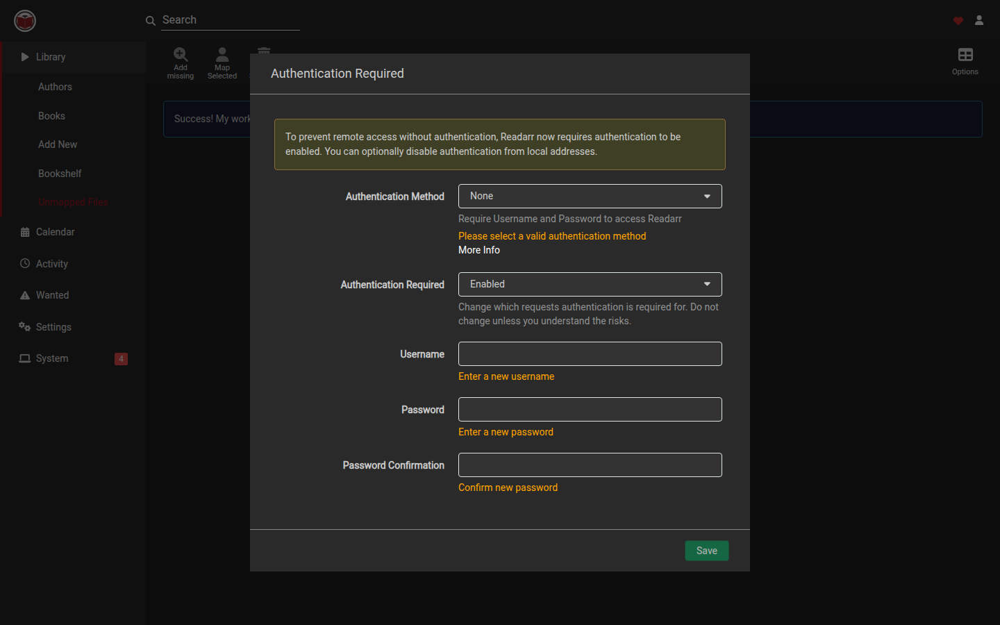

Readarr
Readarr
Unmapped files
Library → Unmapped Files lists files on disk that are not linked to a book.

- Select one or more rows.
- Choose Map Selected to open manual import for the folder that contains those files.
- Or choose Delete Selected to remove the selected files.
- Add missing rescans folders and can add authors for matched files.
Each row also has actions to inspect the file, open interactive import for that file’s folder, or delete that file.